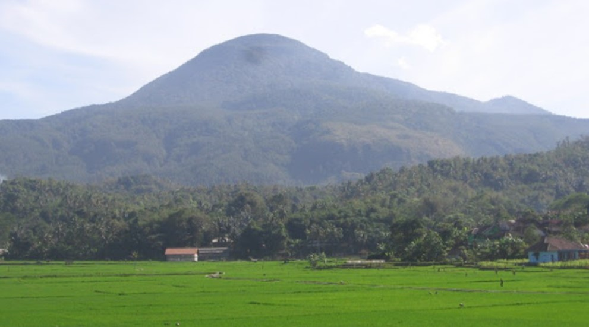
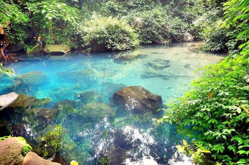

Sejarah

Pada mulanya, Kabupaten Sumedang adalah sebuah kerajaan di bawah kekuasaan Kerajaan Galuh. Didirikan oleh Prabu Guru Adji Putih atas perintah Prabu Surya Dewata sebelum Keraton Galuh dipindahkan ke Pakuan Pajajaran, Bogor.
Seiring dengan perubahan zaman dan kepemimpinan, nama Sumedang mengalami beberapa perubahan. Pertama, menjadi Kerajaan Tembong Agung (Tembong artinya tampak dan Agung artinya luhur) dipimpin oleh Prabu Guru Adji Putih pada abad ke-12. Kemudian pada masa zaman Prabu Tajimalela, diganti menjadi Himbar Buana yang berarti menerangi alam, dan kemudian diganti lagi menjadi Kerajaan Sumedang Larang (Sumedang berasal dari kata Insun Medal/Insun Medangan yang berarti aku dilahirkan; aku menerangi dan Larang berarti sesuatu yang tidak ada tandingannya).
Geografis

Kabupaten Sumedang terdiri atas 26 kecamatan, 7 kelurahan, dan 270 desa. Sumedang, ibu kota kabupaten ini, terletak sekitar 45 km dari Kota Bandung. Kota ini meliputi kecamatan Sumedang Utara dan Sumedang Selatan. Sumedang dilintasi jalur utama Bandung–Cirebon.
Bagian Barat Daya wilayah Kabupaten Sumedang merupakan kawasan pengembangan Kota Bandung. Institut Pemerintahan Dalam Negeri (IPDN), sebelumnya bernama Sekolah Tinggi Pemerintahan Dalam Negeri (STPDN), Universitas Pendidikan Indonesia (UPI), Institut Teknologi Bandung (ITB), serta Universitas Padjajaran (Unpad) berlokasi di Kecamatan Jatinangor.
Sebagian besar wilayah Sumedang adalah pegunungan, kecuali di sebagian kecil wilayah utara berupa dataran rendah. Gunung Tampomas (1.684 mdpl), merupakan dataran tertinggi di kabupaten ini yang berada di utara Sumedang.
Wisata
Selain julukannya Kota Tahu, Sumedang memeliki beberapa wisata yang beragam dan menarik,mulai dari keindahan alam hingga warisan budaya yang kaya.
Gunung Tampomas

Gunung Tampomas berlokasi di Cibeureum Wetan, Cimalaka, Sumedang, Jawa Barat. Para pendaki tentunya sudah tidak asing lagi bukan dengan gunung yang satu ini, karena punya daya tarik tersendiri.
Gunung ini memiliki ketinggian sekitar 1.684 meter di atas permukaan laut (mdpl), serta terdapat keanekaragaman flora dan fauna yang bisa Anda temui di sini.
Tanjung Duriat Waduk Jatigede

Wisata Tanjung Duriat merupakan salah satu tempat untuk menikmati Waduk atau Bendungan Jatigede. Seperti kita ketahui bersama, di sekitar Bendungan Jatigede terdapat beberapa tempat wisata yang dapat menjadi tujuan para pengunjung. Selain Puncak Damar, Tanjung Duriat merupakan salah satu diantaranya. Kelebihan dari Tanjung Duriat ialah lokasinya yang berdekatan dengan Bendungan Jatigede, sehingga menjadi tempat favorit untuk menikmati waduk kebanggaan Sumedang tersebut.
Situ Cilembang

Danau Situ Cilembang merupakan salah destinasi wisata alam di Sumedang yang wajib Anda kunjungi, karena memiliki keindahan panorama menakjubkan. Serta airnya sangat jernih dan bersih, bahkan warga sekitar menjadikannya sumber mata air lho.
Lokasinya ada di Desa Hariang, Kecamatan Buahdua Kabupaten Sumedang, Jawa Barat. Banyak spot-spot menarik yang bisa Anda jelajahi untuk mempercantik koleksi foto-foto
Jans Park

Jans Park Jatinangor atau Jatinangor National Flower Park merupakan salah satu destinasi wisata baru di Jatinangor Kabupaten Sumedang atau lebih tepatnya di Jatinangor Nasional Park, Desa Cileles, Kecamatan Jatinangor, Kabupaten Sumedang, Jawa Barat. Tempat wisata ini baru saja dibuka pada tanggal 18 November 2022. Memiliki luas 7.5 hektar Jatinangor National Park (Jans Park) juga menyuguhkan pemandangan menakjubkan pegunungan Manglayang sebagai kelebihannya.